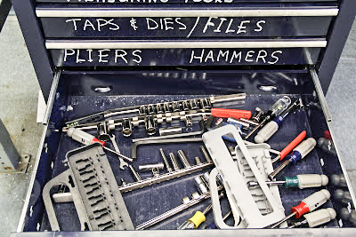
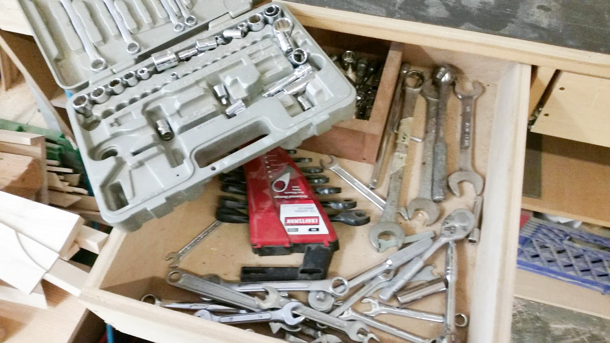

Tackling Tool Organization
Steven Meyer
Too much thinking, not enough making.
Starting this summer I had ideas about what the project was going to be about, such as: changing the environmental feel of the spaces within the shop to make it more welcoming for newcomers to the Shop. However, what I did not know was what I would actually be doing. There were several times where my siblings or parents would ask what I would be doing and I would always enthusiastically respond with, “Redesigning the machine shop at Olin!” When I was pushed for more detail on what that actually meant, I usually responded with “I’ll figure it out when I get there.” One of the things that helped me figure what I would be doing was this picture on the right.
Too much urgency leads to mistakes
This picture clearly displays one of the most frightening scenes. A drawer full of sloppily organized tools. This drawer was unhelpfully labeled wrenches and sockets. As you can tell from the photo, there is a handful of sockets, without the accompanying driver, one double ended box wrench, and a mixture of nut drivers. The reason I was motivated to change this was because I had seen it before. This scene, almost tool for tool exists everywhere. The rest of The Shop’s toolboxes look like this, the Baja team’s toolbox is eerily similar, my robotics team in high school, and even the shop my uncle works for out in Seattle looks almost the same (left).
Design brief, way too much thinking
To be honest, I was surprised that it was this way. When I came to Olin everything was so fresh and new to me. It was so different than any other place I had been to. Except the tool organization. It was just driving me mad. About two months into my first semester I remember helping a sophomore with one of their projects by marking holes in sheet metal. We were unable to find the proper center punch and hammer to mark the holes. So we used a screwdriver as a center punch and an adjustable wrench as a hammer.
Let’s get to work. Bad brief.
Thinking about the main changes done to the room formerly known as the Mini-Shop, now The Workshop.
I truly believe that the space is in a better condition now than it has been in quite some time.
I think that the important part of the work we did in that room this summer and the work in the
other spaces this summer, is that the rooms are not inflexible. There is a culture in some parts of
Olin where if you would like to see spaces and things changed you can do it. The constant iteration
of the spaces in the library by student teams is a good example of this. I do not think that The Shop
shared this mentality in its spaces before this summer.

Full team effort, things go quickly
When working this summer, I realized that there is a gentle balance between two of my six word stories, “Too much urgency lead to mistakes,” and “Too much thinking, not enough making.” At different points in the summer I was making wildly different errors in my process on the same project, the first of which occurred early on when I got mentally trapped when trying to decide on which tools to buy. I was hesitant to commit to anything, dragging my feet throughout the entire process. This made it difficult for me to get motivated to work during that time. The exact antithesis to that was during the last week of the project when I was trying to accomplish way too much in a short period of time. During that week, I worked frantically trying to build every module that I had planned. Of course, I was not taking the care that was necessary to design each module. Once I thought I was done, Liz or Sunny would inevitably point out mistakes that would need to be fixed and a new version of that module would need to be built. It was very much a case of spend ten minutes now to save an hour later. This balancing act between being so intentional with decisions that “rigor mortis” sets in and working quick enough to get the work done in a reasonable timeframe is something that I wish I knew coming into the project. Being able to know when it is appropriate to be on each side of that scale, is critical to be an effective and efficient designer. The other aspect that I believe parallels this balancing act is not being blind to how things are going. There were times towards the end of the project when I thought (at least outwardly) that I would be able to finish the Tool Wall. However, I believe that I actually knew that it would not be finished by the end of the summer. Accepting that truth would have allowed me to more appropriately plan the rest of that project and how it would continue going forward.